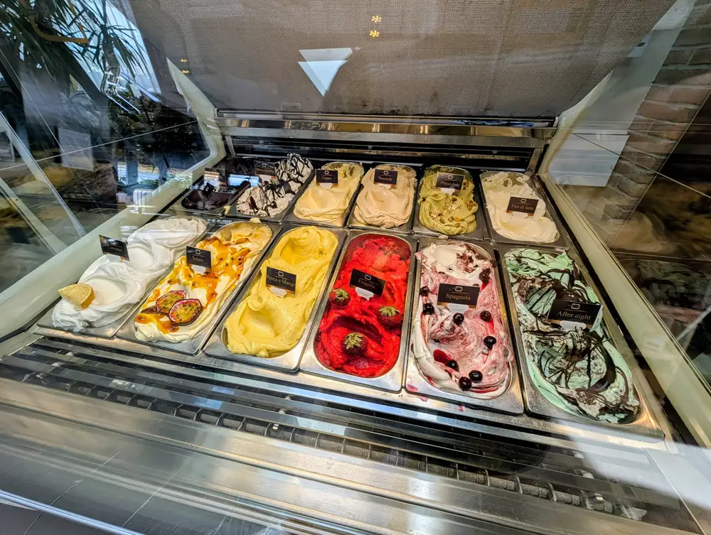
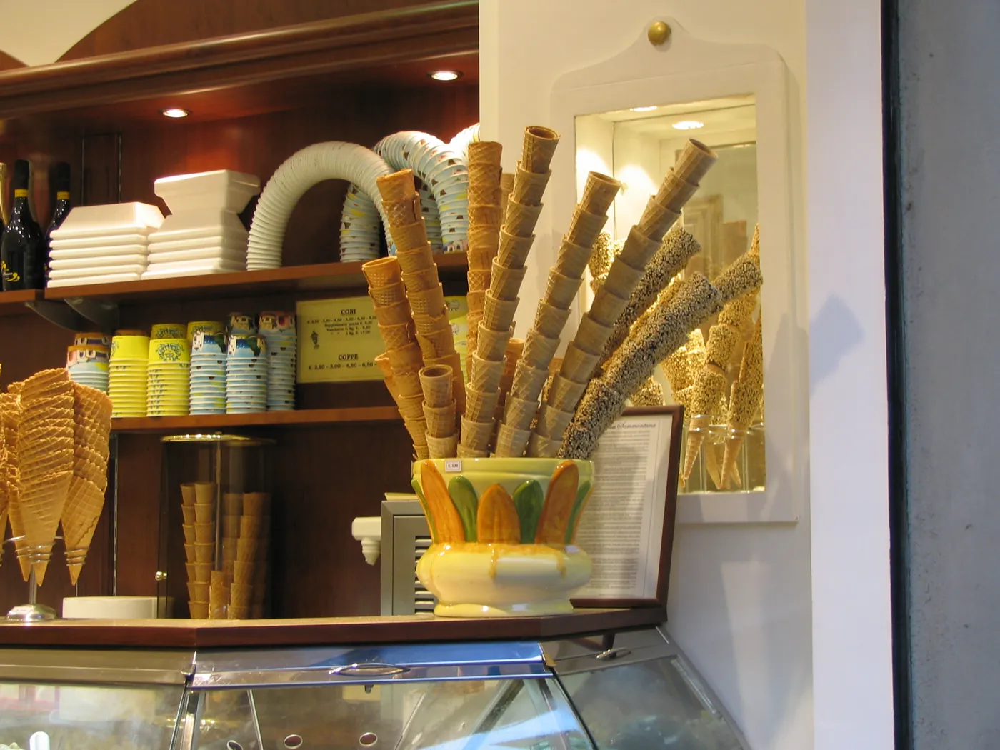
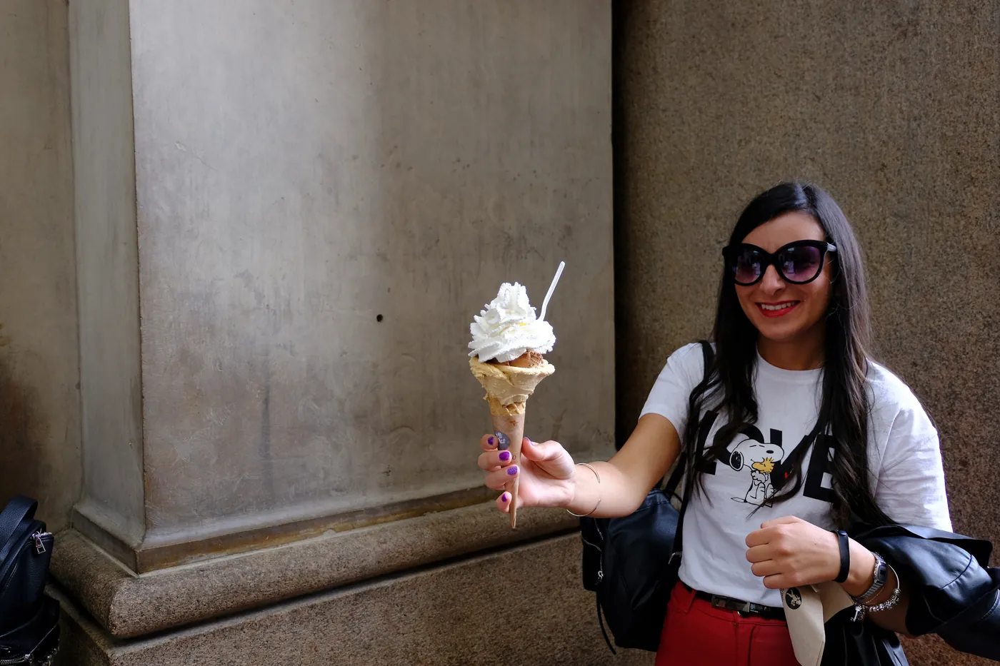

Pistacchio di Bronte
Pistacho siciliano DOP
Pistacho de Bronte, Sicilia. Sin colorantes, color verde apagado natural. Notable amargor noble al final.
Hacemos gelato como se hace en Italia: fruta fresca, leche, pistacho de Bronte, cacao venezolano. La mayoría sin lactosa. Casi todos sin gluten. Vienes, pruebas, eliges. Sencillo.

Pistacho de Bronte, Sicilia. Sin colorantes, color verde apagado natural. Notable amargor noble al final.
Mascarpone fresco, café espresso italiano, savoiardi triturados, cacao en polvo encima. El más pedido de la casa.
Fresa fresca, sorbetto a base de agua. Sin lácteos, sin gluten. Solo en temporada (de marzo a junio).
Crema base con cobertura de chocolate fundido a 60 °C, triturado al congelarse. El clásico que nunca falla.
Crema de huevo, azúcar caramelizado a fuego directo. Receta italiana con guiño catalán.
Pasta de sésamo negro tostado, leche, azúcar. Color gris ceniza, sabor intenso a fruto seco quemado.
Leche de coco, cúrcuma rallada, ralladura de lima. Sabor especiado, color amarillo intenso, totalmente vegano.
Pasta de almendra siciliana, ralladura de naranja confitada. Recordatorio del sur de Italia en cada cucharada.
Cacao venezolano 70%, agua, azúcar. Sin leche, sin gluten. Color casi negro, sabor de cacao amargo intenso.
+ rotación semanal de 9 sabores más · pregunta al entrar

El gelato no es helado. Tiene menos aire, menos azúcar, menos grasa y mucha más concentración de sabor. Por eso se sirve a temperatura más alta y se nota más en el paladar.

Casi todo. Los sabores con base de fruta (sorbetti) son 100% sin lactosa y veganos. Los sabores cremosos llevan leche, pero también tenemos versiones sin lactosa de pistacho, chocolate y crema. Pregunta en barra y te marcamos cuáles llevan qué.
Todos los gelatos son sin gluten. Los conos son de gofre con harina de trigo, pero la tarrina es opción siempre. También tenemos cono sin gluten bajo pedido.
Sí. Tartas heladas con dos o tres sabores a elegir, base de bizcocho o galleta (con o sin gluten), decoración con fruta o cobertura de chocolate. Mínimo 48 horas de antelación. Pídelo por teléfono o al pasar por la tienda.
Servimos también café espresso italiano, capuccino, affogato (espresso sobre bola de fior di latte) y granita siciliana en verano. Para sentarse hay dos mesas dentro y dos fuera cuando el tiempo acompaña.
Tarrina pequeña una bola 3,30 €. Mediana dos bolas 4,80 €. Grande tres bolas 6,00 €. Cono incluido sin coste extra. Panna y topping de cobertura, también gratis.
Esto era una demo
Esta web era una muestra de lo que podríamos hacer para Gocce di Latte. Si te ha gustado y quieres una para tu negocio, escríbenos — Pedro te responde personalmente y la web final la adaptamos al 100% a tu gusto.
Pedro Núñez · Impacto Digital